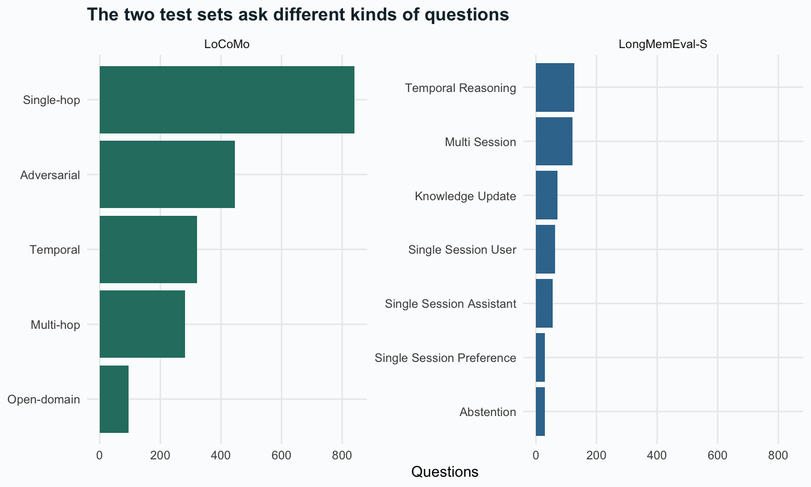
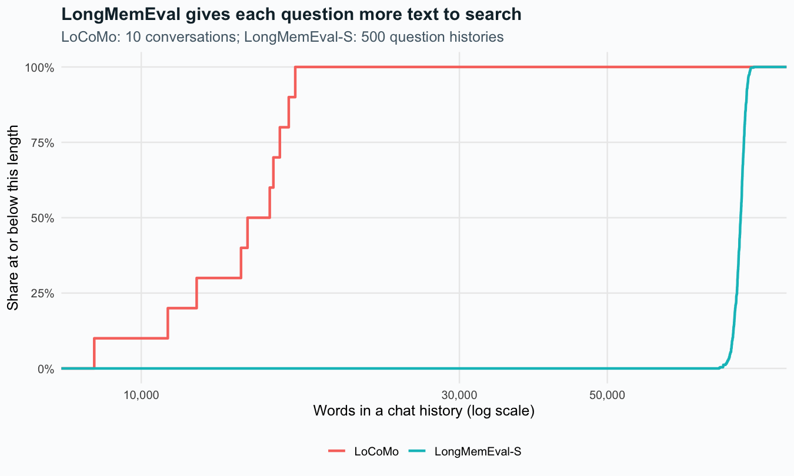
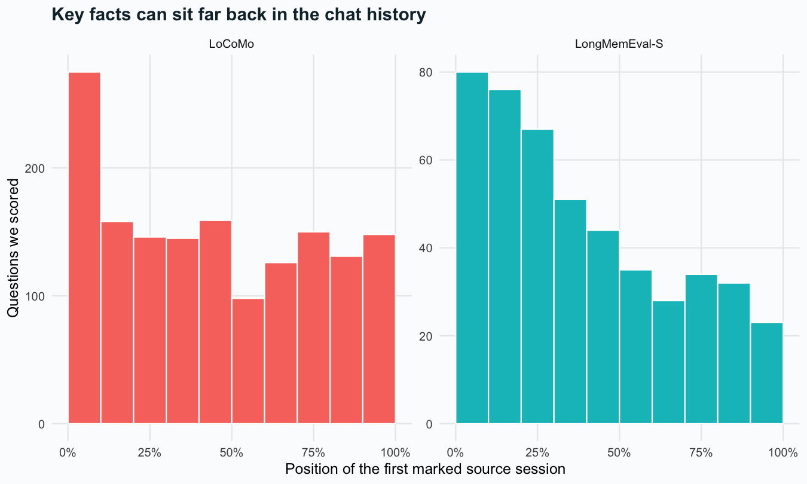
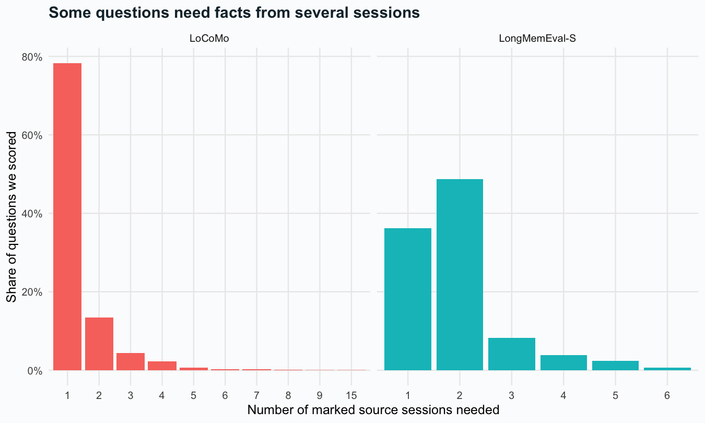

| Dataset | Questions | Eligible | Histories | Session appearances | Distinct session IDs | Turn appearances |
|---|---|---|---|---|---|---|
| LoCoMo | 1,986 | 1,536 | 10 | 272 | 272 | 5,882 |
| LongMemEval-S | 500 | 470 | 500 | 23,867 | 19,195 | 246,750 |
The data behind the study
Public data / Our counts
We use the full LoCoMo file and the cleaned LongMemEval-S release. We saved the source version for each and counted the records. A benchmark is a shared set of tasks used to test a method. LoCoMo source · LongMemEval source.
What the counts mean
Questions, chat sessions, messages, and test runs are different counts. LoCoMo has ten chat histories that many questions share. LongMemEval gives each question a history, but some histories reuse the same sessions. A repeated session is not a new source. These files mix chats made for tests with other shared text. They do not form a sample of our users or of all workers.
What do the questions test?
task_counts <- q |> count(dataset, category)
ggplot(task_counts, aes(n, reorder(category, n), fill=dataset)) +
geom_col(show.legend=FALSE) + facet_wrap(~dataset, scales='free_y') +
scale_fill_manual(values=c('#287d70','#39769c')) +
labs(x='Questions', y=NULL, title='The two test sets ask different kinds of questions')
We leave questions with no answer out of the recall scores. This includes the adversarial tests, which ask about facts the history cannot supply. We keep them in the data counts. We also leave out questions with missing source labels or labels we cannot match. The download lists each reason. A later test should check whether an AI knows when to say it does not know.
How long are the chat histories?
ggplot(h, aes(words, colour=dataset)) + stat_ecdf(linewidth=1) +
scale_x_log10(labels=scales::comma) + scale_y_continuous(labels=scales::percent) +
labs(x='Words in a chat history (log scale)', y='Share at or below this length',
colour=NULL, title='LongMemEval gives each question more text to search',
subtitle='LoCoMo: 10 conversations; LongMemEval-S: 500 question histories')
We count words split by spaces, including names, roles, and dates. Words are not the same as tokens, the text units an AI model reads. In this chart, LoCoMo adds one record per chat history. LongMemEval adds one per question history.
Where are the key facts?
ggplot(filter(q, eligible), aes(earliest_evidence, fill=dataset)) +
geom_histogram(binwidth=.1, boundary=0, colour='white', show.legend=FALSE) +
facet_wrap(~dataset, scales='free_y') + scale_x_continuous(labels=scales::percent) +
labs(x='Position of the first marked source session', y='Questions we scored',
title='Key facts can sit far back in the chat history')
We place each session at the midpoint of its slot in the history. We then divide that position by the number of sessions. The scale runs from the start of the history to the end. A method that keeps the latest sessions can miss older facts. This chart shows where facts sit in the data. It does not show where an AI pays attention.
How many sessions does a question need?
burden <- filter(q, eligible) |> count(dataset, gold_sessions) |>
group_by(dataset) |> mutate(share=n/sum(n))
ggplot(burden, aes(factor(gold_sessions), share, fill=dataset)) +
geom_col(show.legend=FALSE) + facet_wrap(~dataset, scales='free_x') +
scale_y_continuous(labels=scales::percent) +
labs(x='Number of marked source sessions needed', y='Share of questions we scored',
title='Some questions need facts from several sessions')
Some questions need facts from more than one session. We show the mean share of marked sessions each method finds. We also show how often it finds them all. Other sessions may hold the same facts without a label. Our scores use the labels the source gives us.
Sources and downloads
Question list · Chat history list · Questions left out of scoring · Source versions and file checks
LoCoMo uses the CC BY-NC 4.0 license. This study is for research, not commercial use. Check those terms before using the data in a product. LongMemEval lists the MIT license. Check the terms of its upstream sources too. We keep the raw chat files in the source project. This site shares counts and scores, not the raw chats.